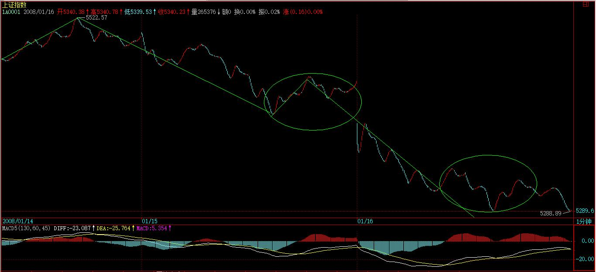
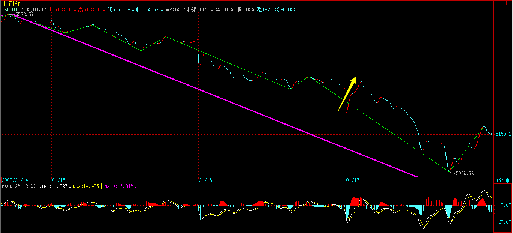

(2008-01-15 18:08:05)
显然，所有问题都集中在（1，0）或（-1，0）之后怎么办，如果这两种情况后只有一种情形，那当然不错，可惜这世界没有这么简单，（1，0）或（-1，0）之后，都有（1，1）、（-1，1）两种可能。【韶山映山红】顶底分型之后都有延伸和转折的可能。】
以（1，0）为例子，（-1，0）的情况反过来就是。（-1，0）这个信号是绝对明确，毫不含糊的，任何人都可以唯一地去确定。那么，一个同一的信号，对于不同的人，处理的方法是不同的，这和每个人的水平相关：
一、如果你震荡操作的水平一般，而又胆子比较小，又没时间、跑道，喜欢落袋为安的，那么，一个足够周期的（1，1）后出现（1，0），例如周的或日的，这意味着已经有足够的获利空间，这时候，最简单的作法就是把成本先兑现出来，留下利润，让市场自己去选择，不费那个脑子了。【韶山映山红】向上笔出现顶背驰，开始构造顶分型，卖出部分股票，把成本降为0，抽出本金。】
剩下的筹码可以这样操作，就是如果出现（-1，1），那么意味着低周期图上肯定也出现（-1，1），那么在这个向下笔结束后回来的向上笔只要不创新高，就可以把剩余筹码扔掉。【韶山映山红】低周期图上笔级别的不新高的二卖。】例如周的，你可以看日或者30分钟周期的低周期。【韶山映山红】按周线图操作，出现周线的顶分型后，兑现成本，留下利润。如果开始周线向下笔，就看日线或者30分钟图的向下笔结束后回来的向上笔，只要不创新高，就可以把剩余筹码扔掉。】
【韶山映山红】如果低周期图上这个向下笔结束后回来的向上笔创新高了呢？就意味着高周期图上可能再一次出现底分型，就可以再等下一次向下笔结束后回来的向上笔不创新高。】
当然，还可以直接就看周的5周均线，只要有效跌破就走，这可能更简单。【韶山映山红】情况恶劣的周线顶分型，有效跌破MA5，才会比次级别笔来得早。】
二、如果你震荡操作水平比较好，就利用（1，0）后必然出现的震荡进行短差操作，由于都是先卖后买，所以如果发现市场选择了（-1，1），那么最后一次就不回补了，完全退出战斗。【韶山映山红】这个（1，0）到（-1，1）的过程就是操作时间段。这里“必然出现的震荡”是指背驰之后的中阴阶段。问题是临界点怎么设定？★】
【韶山映山红】部分仓位打短差，很显然，这个部分仓位小于足够抽回本金的仓位。最后一次不回补，同时还要记得，剩下的仓位依然要按照上一个方法，在低级别向下笔结束后回来的向上笔，只要不创新高，就把剩余筹码扔掉。】
注意，利用短差操作时，一定要分析好这个（1，1）到（1，0）所对应的走势类型，例如一个周线上的（1，1）到（1，0），必然对应着一个小级别的上涨，至于这个级别是1分钟还是5分钟、30分钟，那看具体的图形就一目了然了。【韶山映山红】这个（1，1）到（1，0）的临界点怎么设定？★】这个（1，1）到（1，0）一般就是背驰段，背驰点就是临界点。】
【韶山映山红】“（1，1）到（1，0）所对应的走势类型”如果是上涨趋势，就可能有大级别盘整，可以做震荡。如果是盘整，就要注意向下走势。】
（1，0）的出现，有两种可能的情形，【韶山映山红】顶分型之后有两种可能，笔继续延伸向上和转折向下笔。】
一、该对应的上涨出现明确的背驰完全地确认结束，那么整个震荡的区间，就要以上涨的最后一个中枢为依据，只要围绕着该区间，就是强的震荡，否则，就肯定要变成（-1，1）了，就是弱的震荡了。弱的震荡，一般一旦确认，最好还是不参与。等出现（-1，0）再说了。【韶山映山红】趋势背驰之后的中阴阶段也形成一个多义性中枢，然后是这个中枢的第三类买卖点判断走势方向，这个中阴阶段中枢维持在B中枢区间以上才是“强的震荡”。】
三、如果市场最终选择（1，1），那么这个（1，0）区间就有着极为重要的意义。这区间上下两段的（1，1），就可以进行力度比较，一旦出现后一段力度小于前一段，就是一个明确的见顶信号，然后根据对应的走势类型进行区间套定位，真正的高点就逃不掉了。【韶山映山红】一笔内的力度分析。顶分型之后没有形成向下笔的一个回踩，也可以把回踩看做中枢去分析前后走势。】
【韶山映山红】这里的一二三排序混乱了。捋一下：
以（1，0）为例，根据操作水平分，一，震荡操作的水平一般……；二，震荡操作水平比较好……。
（1，0）的出现有两种可能的情形，一、背驰，震荡区间……三、市场最终选择（1，1）……】
上面，把可能的操作进行了分类说明，方法不难，关键是应用时得心应手，这可不是光说就行的。最终能操作到什么水平，就看各位自己磨练的工夫了。
【韶山映山红】本文全文宋体18加粗字体，红色R255G0B0。】
(2008-01-16 15:17:40)
昨天说“并不排除有一到两天让大家再次想起亮晶晶的机会”，【韶山映山红】亮晶晶，跳水王子田亮和跳水皇后郭晶晶。】结果，今天那花旗参大作广告，使得大盘又见亮晶晶，严重怀疑亮晶晶暗中代理了花旗参的销售。【韶山映山红】美国最大银行花旗集团公布该行在去年第四季度巨亏98.3亿美元，为花旗有史以来最大的季度亏损，也超过了此前市场最悲观的预期。受此影响，昨日开盘后，美国三大股指全线大跌。欧洲三大股市盘中不断扩大跌幅。先于美欧股市结束交易的亚太市场昨天也普遍大挫。】
中投公司，前段时间不是牛哄哄地趁底买这股权那股权，现在花旗参来了，中投公司是不是又想把一千几百亿往里面填数堵窟窿呢？
中国人该干什么，本ID N年前的人民币与货币战争里就说清楚了。中国人根本没必要去美国人的地头玩，中国人要烂也只能烂在自己的锅里，自己创造一个全世界的市场，别人爱来不来，我们就自己玩了，憋死你们。十三亿中国人难道还要请3亿的美国鬼子来才可能开桌打麻将？甚至还要漂洋过海去纽约开麻将桌？可笑！
当然，如果你今天把本ID说的股票当成自选股，没看指数，那么，今天好多无耻地放红，不少更无耻地创出新高，完全没美国鬼子什么事。不过，这种情况，如果过分延续，是不好的，太脱离指数也不好，所以下面还是探讨一下指数的问题。
显然，今天的走势对多头来说，并没有什么大不了的，甚至是多头所乐于看到的。这原因，昨天已经说了。技术上，今天的缺口有着极强的技术意义，如果三天之内不回补，那么大盘后面的压力就进一步加大。下面关键是5209点的颈线位置，这位置只要不有效跌破，大盘就依然在多头的控制之中。
短线上，5522点下来的这个线段的类下跌过程十分技术化，两个类中枢也十分明显，下面就是这类下跌的类背驰问题了，一旦出现，就是一次有力度的反弹，关键是这反弹能否突破第二个类中枢的牵制，如果不行，那么缺口的回补就有困难，所以这才是技术上的关键。

日线上，昨天的顶分型后，现在延伸成笔的可能太大了，只要明天有新底就基本确定，所以，稳健的角度，可以等底分型才会有真正的站稳可能，所以这个类背驰能否最终制造出底分型，就是进一步考察的关键。
个股方面，很多股票会继续表现的，当然，如果你觉得心脏受不了，可以先把本拿出来，例如600737之类的，剩下利润在里面继续。有些股票，会涨到你不相信，等你相信了，就是井了。【韶山映山红】600737新疆屯河，2007.03.07中粮屯河，2017.02.17中粮糖业。】
要出一次差，到深圳开一个和PE有关的股东会议，后面几天，晚上的帖子，可能保证不了了，不过解盘还是保证的。
先下，再见。
(2008-01-16 16:18:23)
晚上就走，先到汉口，然后才去深圳。看看今年和湖北有没有缘分，能不能搞点事情。临走前，再来一首《临江仙》，估计周日或周一才能晚上写帖子了，抱歉。
《临江仙》
缠中说禅
大梦沉沉沉永夜
几番雨煮风蒸
天心如海海如倾
一啸云惊散
千江月怒明
漫捣蟾轮空北斗
须弥顶立横行
乾坤今古火中冰
灼然枯淡去
影淬万家灯
(2008-01-17 15:14:57)
当然并不是本ID去深圳，所以就深深地把各位深圳了一把，千万别这样想，否则本ID肯定不能再去长沙了。【韶山映山红】深圳怎么啦？长沙又怎么啦？以后研究。】
亮晶晶一、两天，今天不过就是第二天，多么优美的节奏，不懂得欣赏，太浪费剧本费、排演、场租了。
当然，享受有不同级别，一种是被动型的，一种是主动型。被动的就不说了，都是电梯广告的最好代言。而主动型的，就要靠技术了。【韶山映山红】被动，主动，是级别的区分？★以后研究。】
别小看了最基础的分段技术，5522点下来，近500点，就是一个线段的类下跌，你明白了，就主动了，就享受了。为什么？最猛烈的中枢移动中，往往就是一个线段的类趋势，所谓的单边跌势或涨势，就是这玩意，明白了，你说你能不爽吗？【韶山映山红】“线段的类趋势”，和笔中枢构成的趋势，有什么关系？★★以后研究。】
今天一大早的急拉，只构成了笔，没有破坏下跌段，

如果明白这点，操作就太简单了，因为你绝对不会错过下午那明显的类背驰。【韶山映山红】“明白这点”指的是什么？★★以后研究。】
【韶山映山红】没有破坏下跌段，向下段就会继续延伸，直到线段类背驰引起线段类反弹段。】
【韶山映山红】如果破坏了下跌段呢？就会形成一个向上段，从而构成1分钟线段中枢。然后的走势分析有什么不同？★以后研究。】
但注意，由于这个类背驰的不是在两个类中枢间的，而是单纯一线段中出现的，所以，这个回拉如果不能重新站住5209点，那么后面还要二次探底。【韶山映山红】如果这个类背驰是两个类中枢间的，就会形成笔中枢走势的趋势背驰，也就不需要“二次探底”了。现在这个类背驰是单纯一线段中出现的笔背驰，就只能保证一个线段的反弹，还要二次探底形成线段背驰。这个回拉和5209是什么关系？★】
本周开始时已经说了，春节前要出点情况，就是这周了，后面，就要逐步营造点和谐的气氛，但在营造和谐之前，首先要营造的是恐怖，没有恐怖，把不坚定分子彻底清洗，哪来和谐啊？
个股方面，昨天的提示已经足够明确：“这种情况，如果过分延续，是不好的，太脱离指数也不好”、“如果你觉得心脏受不了，可以先把本拿出来，例如600737之类的，剩下利润在里面继续”，【韶山映山红】600737新疆屯河，2007.03.07中粮屯河，2017.02.17中粮糖业。】今天早上，这些股票都有红盘，000822之类的甚至还有新高让各位去反应，如果你没反应，那本ID也没办法了。总不能举着杠铃让最没反应的人去反应吧，如果这样，这就不是市场，而是童话世界了。
至于600319今天还涨停，那不过是一个态度问题，【韶山映山红】600319亚星化学。】这里的老人大概都知道，就算是530最恶劣的时候，本ID说的股票里还总有一两只顽强地红盘的，注意，一定要声明这可和本ID无关，那大概是电脑出毛病了，抽筋了。
注意，现在没必要追高买股票，注意调整中洗盘洗干净后准备重新启动的，还有就是前期不动，有新资金介入的，但所有的前提是，大盘的恐怖期过去了。
明天周末效应，震荡肯定还会有，但如果没有什么特别的东西，幅度会逐步小下来的，其他，等过了周末，看看消息面、政策面情况再选择。
技术高的，现在是游戏的黄金期，一个30分钟的震荡，操作好了，收益比单边还要高，特别对资金不大的散户。没这水平的，就把仓位控制在适当范围，也就是可以睡觉睡好的范围，等日的底分型出现再说了。
先下，再见。
(2008-01-18 11:45:59)
下午一收盘就开始股东会，没时间写解盘，晚上，这群家伙不会放过本ID的，周末有时间再补上，抱歉了。
早上走势，和昨天说的一致，就是两天的亮晶晶后，震荡还有，但幅度变小，但由于5209点没重新站住，大盘总体还在一个剧烈震荡后的平复期，依然有较大不稳定因数与情绪需要时间平复，另外，周末的政策消息面以及外围因素，依然有巨大的心理影响。
下面，把写好的一帖子贴上来，算是今天的帖子了。
在去年底的今年展望中，已经明确指出今年走势的多变性与操作难度。
今年“与井同行”，一般来说，没有足够的自我意识，企图靠拐杖的人，今年都会比较麻烦。投资，是一种专门的学问，前提是，你首先是一个有思想的人，而不是一个木偶。
就像在那篇关于剧本的帖子里本ID说的，就算把剧本告诉你，很多人最终还是要落井。为什么？因为，首先很多人大概都是跟着孔男人学的中文，中文理解力几乎为0，剧本可能也读不懂。例如，当时写的这一段：“剧本里对5860到5912这个缺口很不满意，已经准备了不少胶水，不过还有点缺货，什么时候把剩余的胶水准备齐了，关键看在5462到5675点时间段内政策面的风向，风向不对，那就先把买胶水的钱换成买棒棒糖的，一人一个棒棒糖，看你要棒还是糖。”【韶山映山红】5462是第一段下跌的最低点，在反弹时成为阻力位置。反弹回跌幅2/3的位置5675是另一个阻力位置。】
如果你竟然能理解成大盘一定要先到5675点，那么，就去找孔男人追讨中文的学习费用吧。请问，5522点是否5462点到5675点之间？请问，这时候发棒棒糖难道有一丝一毫违反剧本吗？关键是，你在这过程中，是吃棒了还是吃糖了？技术好的，在这个震荡中，早爽呆了；技术不好，心态又不好的，不吃棒那是没天理了。
“一人一个棒棒糖，看你要棒还是糖。”这句话，好好体会吧，全年都有意义。
其次有些人，理解到了，看到5522点后的日顶分型，但就是对自己的判断没信心，一定要一个拐杖。好了，就算本ID提示有1、2天亮晶晶的拐杖，但真来了，估计你也没心情拐杖了。
本ID在日顶分出现的当晚给了”教你炒股票93：走势结构的两重表里关系2 2008-01-15 18:08:05“，很多人看了，觉得是重复，和以前的没什么不同，你现在在去看看这针对性，你选择好了自己的位置没有？你属于什么类型，对应的处理，你处理好没有？
操作，不是一个纯学院的讨论，操作都在细节之中。何谓细节？你自己的水平，就是第一大的细节。然后选择符合自己水平的操作，这就是第二大的细节。最后，按规程操作细节去操作，这就是操作的全部。
在市场中，不首先认识好自己，一切都瞎掰。
本ID之所以写这帖子，是因为现在2008年才过了10几天，如果现在不彻底清醒过来，那么，今年将是很多人的灾难之年。最好的选择，就是现在马上退出吧。
今年，所有人将面临四种命运：
1、技术好、心态好的，将比去年还赚钱，别小看震荡的功夫，回头看看，从6124点下来到今天，也就是走了一个30分钟的盘整，只不过这中枢有点低，在5209点上下。
谁只要把线段、1、5、30级别搞清楚，对于散户来说，足够了。按本ID的理论，2005年中开始的行情，到目前为止，最多就算是日线级别的，一个日线级别就走了2年多，你就知道本ID这体系的宽广度。
2、技术好，心态不好的。这种人几乎没有，因为真的技术好了，一切都看明白了，自然心态好。如果真有这种人，那今年的成绩也就赚点小钱了。
3、技术不好，心态好的。今年就做电梯广告，最后，那电梯广告做多，老化了，有出大事故的风险，例如，突然从20楼掉到负18楼。
4、技术不好，心态更不好的。今年将是这种人的灾难年，是最好的绞杀对象了。
今年，给所有技术不好的人一个忠告，就是一旦有足够的利润而有出现不好信号时，一定要先把本给拿出来。
另外，给那些还希望有更大追求的一个提示，你看看本ID说的股票，当成一个投资组合，你就会发现这个组合十分地有意思，就是此起彼伏，几乎没有一天闲着的。为什么？对于大资金来说，这样是效率最好的。资金才可以最大效率地流动，才可以又清洗又发力，动态地膨胀。
其实，去年初本ID就明确告诉过，本ID的股票组合就是这样的，如果你是散户，能左跳右跳地根据组合中的买卖点来轮动，那你的收益就十分惊人了，绝对比追什么黑马股票要牛多了，而且极为安全。当然，能做到这一点，并不容易，但这好像是一个考验，一个提高，现在做不到，也要有这方面的意识才行，否则，资金的高效率，就很难办到了。
注意，你的组合选择不一定按本ID的来，本ID的可以当成一个教学的版本。
不过，一定要注意，没这水平与意识的，就算了。我们总要实际点，不是每个人都能成为高手的，更多人一生的努力，也就是这样了，这是实际的话。
有些话，只是说给相应的人。世界上的山峰，并不是所有人都能或需要会当临绝顶的，先把自己认识清楚，把自己的能量激发出来，如果这样，你就是能会当临绝顶的人了。
在那绝顶之上，万古长空。
(2008-01-19 10:31:53)
对不起，昨天忙于开会，没时间解盘，现在补上。
周五大盘这种走势，已经在周四解盘中说过了，就是震荡幅度减少，等待消息、心理面的平复。

周五，一个标准的箱型震荡，最后高收，
由于5209点的跌破，没有到三天的基本限期，所以只要下周初能站上去，就可以了。

好了，现在，用最明确的语言告诉各位后面大盘的走势。但本ID依然要告诉你，肯定还有很多人，特别是跟着孔男人学中文的，最后还是要到井里去。本ID的语言，从来都是如数学般精确，关键你能看明白。
现在，就是一个30分钟的大震荡，按照本ID的理论，30分钟的震荡，最坏的情况，破4778点也是可以的，为什么？这么简单的理论问题，就别问为什么了，去看课程去。
当然，对于多头来说，当然不希望出现30分钟震荡中那种最坏的情况，那么，对于多头来说，化解这30分钟震荡的唯一方法，就是制造一条缓升通道。
现在，你打开日线图，这缓升通道的4个原始支点中的3个早出现了，这次的亮晶晶，如果多头能控制住，那么就是完成第4个原始支点的制造。有了4个点，上面两个，下面两个，这通道就形成了，后面就可以按这通道继续游戏了。
这通道的特点，就是速率比较缓，但幅度比较大，这样，就可以制造出相应的行情，又有足够的回旋余地。是目前多头在如此政策消息技术面下唯一最佳的选择。
通道式上涨，是最不消耗能量的，只要操控得当，就可以把成本震荡得最低而又保持好基本的形态，【韶山映山红】通道式上涨，可以把成本震荡得最低，而又不影响基本的形态，所以是最不消耗能量的。】一旦有一个飞腾的机会，就可以破通道而出，最后挖出了迷绝众生的大井，让所有被通道折腾的都变青蛙去。【韶山映山红】其他结构有什么样的能量特征？★可以做个专题，以后研究。】
本ID已经把坏招都说了，但本ID一定要声明，本ID不是多头也不是空头，本ID只按自己的理论办事，因为，一旦多头失败，陪葬的只能是他们自己，本ID最多会给他们加一把土的，
不过，为了今年的面包，在年初的时候，本ID在精神上当然是支持多头的，对多头下手温柔点，目的是为了后面把他们养肥了好下重手。无疑，对多头的缓升通道，本ID是乐见其成的，也会一旁摇旗呐喊一番。
但，本ID对30分钟震荡的所有情况，都会有相应的对策，一旦多头不能显示出足够的信心，本ID会把他们变成青蛙煮粥喝的。
面包不够，只能喝青蛙粥了，好可怜啊。
如果上面的文字都看不明白，就快去追讨孔男人去吧，孔男人，你教的什么中文？
但更重要的，比追讨孔男人更重要的，就是一定要知道，学习本ID的理论后，就永远不会有什么无聊的多头空头滑头的想法，市场只是市场，走势只是走势，如此而已，你需要的，只是倾听。然后，你的心里马上升腾出所有可能走势以及相应的对策，然后，就看着市场的出牌去出牌，如此而已。
市场，不过就是一桌麻将，周末，搓去吧。
明晚，北京见。
(2008-01-20 21:01:31)
刚到家，本来要写打坐的，但有点累，不想写了，说两句闲话。
每个人，每一个念头、行为、语言，都在造业，都在种下种子，而更为重要的，每一种子，马上就结出果实，而这果实相续而去，等到机缘成熟显发出来。如此一说，大概真正相信者不多，因为没有实证，不会有人真正相信。
而你的每个行为、语言、念头，都不过是旧有种子的缘合而萌发，而每个萌发，又新熏习新的种子，如此往复，无有尽期。当然，这也不会有人真的相信。
意画心描自主奴，不管你相信与否，你的命运都是自己造成的，你的命运的改变也是自己造成的，没有你自己种下的种子，佛也救不了你。
有空，就好好看看你自己这个世界吧，看看自己曾种下什么，又有什么正萌发，又有什么还在潜伏，又有什么被新种下了。善种子、恶种子，堆满你的世界。
大德，除此善恶种子，还有什么是你的本来面目？
参！
(2008-01-21 15:18:54)
刚被花旗参暗算完，周末又被平安保险暗算了一把，多头至少在指数上已经没有任何的回旋余地。技术上，前面已经说了，5209点不能重新站住，就要二次探底，直到出现日的底分型为止。而一个30分钟震荡，4778点在最坏的情况下完全可以被击破。被暗算的多头今天开盘无力站上5209点，就使得后面的走势变得只能以坏的选择去选择了。
站在本ID的角度，并不大关心这类问题。本ID最关心的问题，最近都有了答案。应该记得，去年末时，本ID痛斥了某些人为了某些原因，企图年末抢闸上报所谓的股指期货，现在，事实已经出来了，那企图已经破产，而那些尾随而上资金，不仅失去了一波大的个股行情机会，而且终于忍受不住，落荒而去。
这就是本ID最愿意见到的结果，股票，可不单单是那几条曲线。对于散户，当然可以只关心曲线，但后面的刀光剑影，你又能知道多少？
大资金，只有杀大资金才能爽的，那些整天盯着散户的资金，算个屁。
本ID的观点从来都很明确，要烂就都烂在A股，本ID一直的愿望就只有一个，把A股变成全世界最大、中国人自己的麻将桌，让鬼子只有屁颠屁颠的份，任何违背这个目标，本ID都要竭尽全力去阻击，例如上次那无聊的直通车。
回到今天的市场，那平安不平安，石油变瀑布，大家伙当然是有用的，等某些人彻底认输了，大家伙就有用了，如果不认输？那就想想本ID曾说过的关于中石油的一个酒桌上的故事，把话挑白了，如果不投降，那故事里的数字是可以修改的。
不说故事，说技术。按纯技术的分析，从5522点下来，按照本ID的理论，线段下跌结束后，中阴形成1分钟中枢，那么，最坏的情况，就是这中枢是1分钟下跌的第一个中枢，如果这样，这跌势还早着，至少要等到这1分钟下跌背驰才完。还有就是先扩展才5分钟中枢，因为30分钟级别的震荡，最大的级别只能是5分钟的，因此一旦那5分钟形成，最坏的情况，就是那是5分钟下跌的第一个中枢。无论后面的中枢是1分钟还是5分钟的，都要走出第三类买点才算真正摆脱下跌的压力。
而实际上，由于今天下午已经把那1分钟的中枢的第三类卖点（在什么位置和时间，一个简单的题目，如果当时不能正确马上给出的，都要补课）给制造出来，所以，下面最好的情况，就是扩展成5分钟中枢，而且，1分钟下跌形成的机会绝对不小。
从理论上有了这么明确的分类，后面的操作就很简单了。如果你不想烦，就看日的底分型的形成时再说。如果你特爱好换股短线，那么，就根据这个中枢的演化去安排具体的操作，事情就是这么简单，唯一有点复杂的是，你操作的是具体股票，指数是指数，股票是股票，从来就不经常是一回事情。所以，多关心你自己的股票，你的股票池的具体走势。例如，就算今天的走势，依然有股票继续新高。【韶山映山红】要有自己的股票池，就不会总被大环境牵着走了。】
注意，严重注意，任何股票都不值得追高，本ID也不需要任何散户来抬轿子，没有永远上涨的股票，股票涨多了就要歇歇，【韶山映山红】非背上涨总会有盘背，连接段之后就是中枢。】有本事的，歇歇也能震荡出利润，【韶山映山红】中枢震荡，打短差。】没本事的，涨多了，就把本拿出来。【韶山映山红】不做中枢震荡的，就要在盘背出来。】
任何持有的股票，都以能吃能睡为最基本的持仓标准。如果你持有一只股票，已经影响到的睡眠与吃饭，请马上退出。
股票，说白了只有四个字：级别、节奏。参透了这一点，就大块吃肉，大碗喝酒，日日好时光，天天419。否则，就被股票节奏去吧。
中线上，又被暗算的多头尚能饭否？本ID在去年末的今年分析中已经明确说过，今年完全有可能创不出6124点的新高，但，今年不是指数的行情，而是板块行情，这点，在那帖子里已经明确说过了，就算指数不创新高，依然有无数机会在等着，关键是你有没有这样的技术和心态。
少坐电梯，多练技术。最简单的一招，见日顶分型走，日底分型再回来，这一招练熟了，今年就能少坐很多电梯。
再次将本ID今年希望的三件事情说一下：想见创业板，不想见股指期货，印花税要降低。不管如何，希望都能实现。
先下，再见。
本课目录
教你炒股票93：走势结构的两重表里关系2大盘又见亮晶晶填词又见《临江仙》不会享受大震荡的人股票就没入门今年投资者的四种命运多头能否构建缓升通道？刚到家，说两句又被暗算的多头尚能饭否？